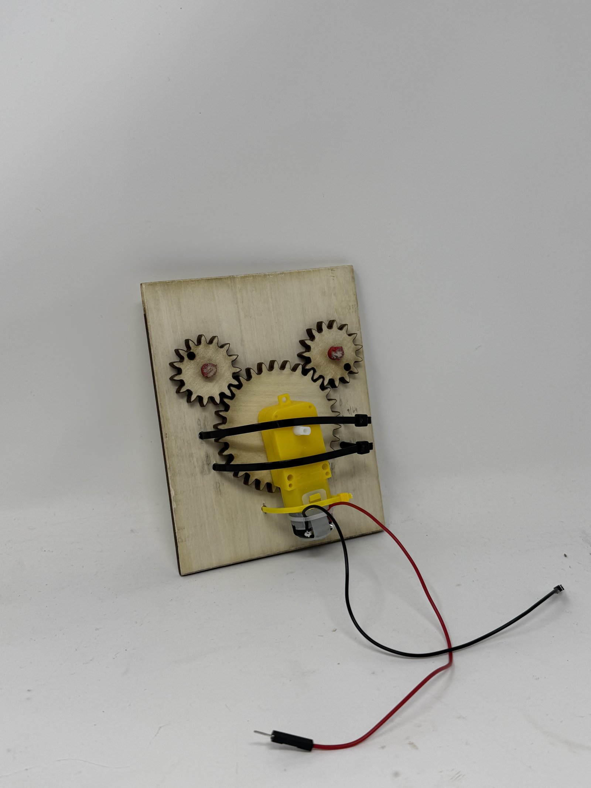

<div class="textcontainer">
<br></br>
<h1>Week 3: Hand Tools and Fabrication</h1>
<p class = "margin"></p>
The assignment was to build a cardboard kinetic sculpture. I made a cardboard person doing the "6 7" meme — both arms swing up and down like the kid weighing imaginary scales. Single DC motor, two gears driving the arms, all mounted to a plywood back.
<p class = "margin"></p>
<iframe width="315" height="560" src="https://www.youtube.com/embed/0UwbJvK7Rhk" title="Working kinetic sculpture" frameborder="0" allow="accelerometer; autoplay; clipboard-write; encrypted-media; gyroscope; picture-in-picture; web-share" allowfullscreen></iframe>
<p class = "margin"></p>
<h2>The mechanism</h2>
<p class = "margin"></p>
Three laser-cut plywood gears: one big gear in the middle, two small gears above it on either side. The big gear sits on the motor shaft, and it meshes directly with both small gears at the same time — so when the motor spins one way, the two small gears spin in opposite directions. Each small gear has a hole offset from its center where one of the cardboard arms pins on, which converts the rotation into the up-and-down arm motion on the front side.
<p class = "margin"></p>
<p></p>
<p class="caption">Back of the sculpture — DC motor (zip-tied), big plywood gear on the motor shaft meshing with two small gears that drive the arms.</p>
<p class = "margin"></p>
Everything visible above is the back of the sculpture — the cardboard person is mounted on the front, with its arms passing through to attach to the offset holes in the small gears.
<p class = "margin"></p>
<h2>Parts I cut</h2>
<p class = "margin"></p>
All four pieces went onto the laser cutter. Plywood for the structural stuff (the gears and the backboard), corrugated cardboard for the person.
<ul>
<li><b>Backboard</b> — plywood, 107.1 mm × 134.7 mm.</li>
<li><b>Big gear</b> — plywood, sits on the motor shaft.</li>
<li><b>Small gears (×2)</b> — plywood, mesh with the big gear.</li>
<li><b>Person</b> — corrugated cardboard, mounted on the front side. Arms are separate pieces that pin onto the small gears.</li>
</ul>
<p class = "margin"></p>
Source files for anyone who wants to remix:
<p class = "margin"></p>
<a href="big-gear.dxf" download>big-gear.dxf</a> |
<a href="small-gear.dxf" download>small-gear.dxf</a> |
<a href="person.dxf" download>person.dxf</a> |
<a href="person.svg" download>person.svg</a>
<p class = "margin"></p>
<h2>Electronics</h2>
<p class = "margin"></p>
A yellow TT-style DC gearmotor (cheap, the kind that comes with every Arduino starter kit) is mounted to the back of the plywood with two zip ties — those are the black bands across the motor in the photo above. Drive electronics are a XIAO ESP32-C3 controlling a MOSFET that switches the motor's power, with the XIAO's PWM pin going to the MOSFET gate so I can dial the speed.
<p class = "margin"></p>
That same XIAO + MOSFET wiring carries forward into the final-project robots later in the semester — this week was effectively the dry run for it.
<p class = "margin"></p>
<h2>Code</h2>
<p class = "margin"></p>
The sketch is dead simple: write a PWM value to the MOSFET gate pin and let it run forever. The motor's stock gearbox already brings the output RPM down to something that looks human-paced, so I didn't need a timer or any direction switching — constant slow rotation is exactly what the meme wants.
<p class = "margin"></p>
<a href="motor.ino" download>motor.ino</a>
<p class = "margin"></p>
<pre><code class="lang-cpp">const int motorPin = 3;
// Set your speed here!
// 0 = Fastest. 255 = Stopped.
// Try 20 as a starting point for a slow crawl.
int motorSpeed = 30;
void setup() {
pinMode(motorPin, OUTPUT);
}
void loop() {
analogWrite(motorPin, motorSpeed);
}
</code></pre>
<p class = "margin"></p>
Heads up on the PWM polarity: because the MOSFET is wired as a low-side switch with the motor pulled up to the supply rail, the duty cycle reads inverted — 0 is full-on and 255 is off. A speed of 30 gives a slow, gentle swing, which is exactly the vibe.
<p class = "margin"></p>
<div class="week-nav">
<a href="../02_2Ddesign/index.html" class="week-nav-prev">
<span class="week-nav-label">← Previous</span>
<span class="week-nav-title">Week 2 — 2D Design</span>
</a>
<a href="../04_microcontroller/index.html" class="week-nav-next">
<span class="week-nav-label">Next →</span>
<span class="week-nav-title">Week 4 — Programming</span>
</a>
</div>
</div>